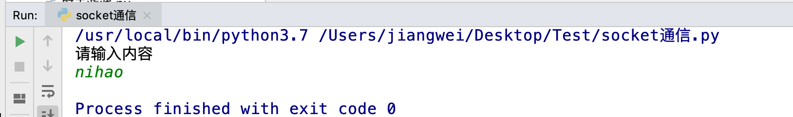

1. udp网络程序-发送数据
创建一个基于udp的网络程序流程很简单，具体步骤如下：
- 创建客户端套接字
- 发送/接收数据
- 关闭套接字
import socket
# 1. 创建一个UDP的socket连接
udp_socket = socket.socket(socket.AF_INET, socket.SOCK_DGRAM)
# 2. 获取用户输入的内容
data = input('请输入内容')
# 3. 准备接收方的地址和端口号
addr = ('127.0.0.1', 8080)
# 4. 将用户的输入内容进行编码，并发送到指定地址和端口
udp_socket.sendto(data.encode('gbk'), addr)
# 5. 接收传递过来的消息，并指定接受的字节大小
recv_data = udp_socket.recvfrom(1024)
# 6. 接收到的对象是一个元组，元组里有两个元素
print(recv_data)
# 6.1 元组里的第一个数据显示接收到内容
print(recv_data[0].decode('gbk'))
# 6.2 元组里的第二个数据显示发送方的地址和端口号
print(recv_data[1])
# 7. 关闭socket连接
udp_socket.close()

运行网络调试助手，查看运行效果：